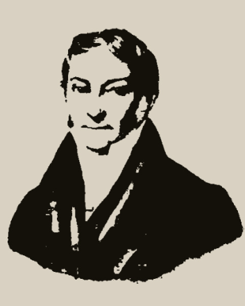
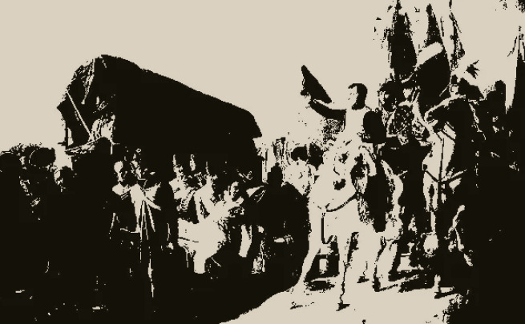
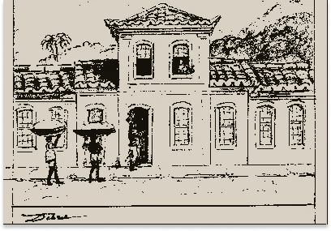
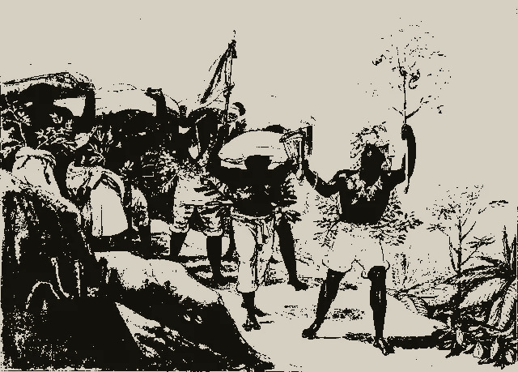

Biografia

Jean-Baptiste Debret nasceu em Paris no dia 18 de abril de 1768.
Estudou na Academia de Belas Artes, tendo sido aluno de Jacques-Luis David,
líder do neoclassicismo e primo de Debret.
Foi desenhista, pintor, cenógrafo, decorador e professor. Era pintor na corte
de Napoleão Bonaparte quando foi para o Brasil em 1816, fazendo parte da chamada
Missão Artística Francesa.
A missão, encomendada pela Coroa Portuguesa, tinha como objetivo o ensino das artes no país.
Permaneceu em terras brasileiras durante 15 anos.
No Brasil, deu aulas de pintura no seu ateliê no Rio de Janeiro e, mais tarde,
na Academia Imperial de Belas Artes, a qual ajudou a fundar.
Viajou por todo o país retratando as paisagens e costumes locais nas suas aquarelas.
organizou a primeira mostra pública de arte no nosso país, a Exposição da Classe de
Pintura de História da Academia, que aconteceu em 1829.
Depois de regressar a Paris, publicou o livro Viagem Pitoresca e Histórica ao Brasil.
Faleceu em Paris no dia 28 de junho de 1848.
Pintor da Corte de Napoleão

Em 1806, Debret iniciou suas obras dedicadas à glória de Napoleão, encomendadas
por Vivant-Denon, diretor de museus. Entre seus trabalhos destacam-se: Napoleão
Homenageia a Coragem Infeliz (1806), uma tela de 3,90m x 6,21m que recebeu menção
honrosa do Instituto de França, “Napoleão Condecora o Granadero Lazareff em Tilsitt”
(1807) e "Napoleão discursa para as Tropas Bávaras" (1810).
Napoleão Homenageia a Coragem Infeliz (1806)
Em 1814, com a queda de Napoleão, Debret perdeu o seu principal financiador.
Pouco depois, Debret recebeu duas propostas, uma do czar Alexandre I,
que o convidou para trabalhar em São Petersburgo, e outra de Lebreton,
que o chamou para integrar
a missão artística francesa no Brasil, conforme solicitação do príncipe regente D. João.
Decidido a participar da missão francesa, Debret embarcou para o Brasil.
Debret Missão Francesa

Com o objetivo de criar uma Escola de Artes e Ofícios no Brasil,
o príncipe regente D. João solicitou a Lebreton,
secretário da Escola de Belas Artes da França,
um grupo de artistas e mestres para formar a “Missão Francesa”
que iria se instalar no Brasil.
No dia 26 de janeiro de 1816, Debret embarcou
no porto de Le Havre. No dia 26 de março de 1816
chegou ao Rio de Janeiro,
juntamente com os outros membros da missão.
Em 1817, Debret abriu seu ateliê no Catumbi. Nesse período, pintou:
Casa de Debret em Catumbi o “Retrato de D. João”
e Desembarque da Arquiduquesa Leopoldina. Em fevereiro de 1818,
em companhia de outros membros da missão, como o arquiteto
Grandjean de Montigny e o escultor Auguste Taunay, Debret
recebe a tarefa de projetar e preparar a ornamentação do Rio de
Janeiro para os festejos da coroação de Dom João VI.
Pintor da Corte de D. João VI
Posteriormente, Debret tornou-se o pintor oficial do Império. Produziu retratos da Família Real e,
durante muitos anos exerceu a função de cenógrafo do Real Teatro São João. Pintou quadros históricos
e gravuras que mostram costumes e tipos humanos do Rio de Janeiro da época:
Pintor da Corte de Dom Pedro I

Em 1821, com a volta de Dom João VI para Portugal, Debret passou a servir Dom Pedro I, de quem recebeu a Comenda
da Ordem de Cristo. Em 1829 e 1830, realizam-se as duas primeiras exposições de artes no Brasil.
Em 1831, com a abdicação de Dom Pedro I, Debret regressa à França, depois de 15 anos no Brasil,
levando consigo Manuel de Araújo Porto Alegre para pretendia se aperfeiçoar em Paris.
Os 350 originais das gravuras de Debret executadas no Brasil, estão conservadas na Fundação Castro Maia,
no Rio de Janeiro. As telas a óleo encontram-se no Museu Nacional de Belas Artes, no Rio de Janeiro.